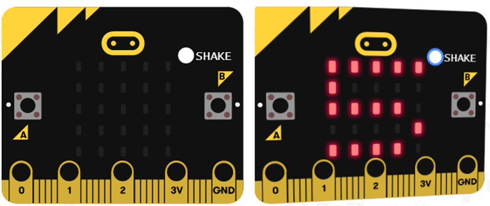
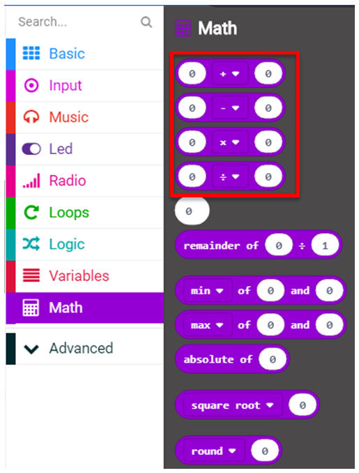
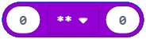
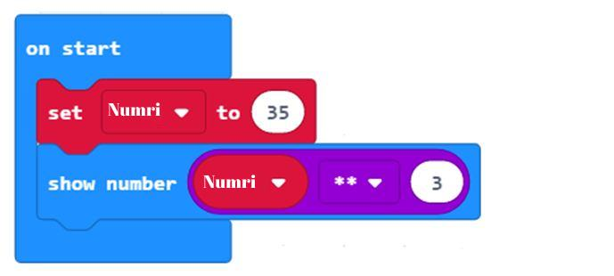
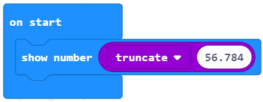
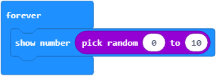

<!DOCTYPE html>
<html xmlns="http://www.w3.org/1999/xhtml" lang="en"></html>
  <head>
    <meta charset="utf-8" />
    <meta name="viewport" content="width=device-width, initial-scale=1.0" />
<title>Mësimi 10 – Operacionet aritmetike dhe variablat &#8212; Programimi i një pajisje Micro:bit në MakeCode </title>
    <link rel="stylesheet" href="_static/pygments.css" type="text/css" />
    <link rel="stylesheet" href="_static/basic.css" type="text/css" />
    <link rel="stylesheet" type="text/css" href="_static/activecode.css" />
    <link rel="stylesheet" type="text/css" href="_static/codemirror.css" />
    <link rel="stylesheet" type="text/css" href="_static/clickable.css" />
    <link rel="stylesheet" type="text/css" href="_static/pytutor.css" />
    <link rel="stylesheet" type="text/css" href="_static/modal-basic.css" />
    <link rel="stylesheet" type="text/css" href="_static/datafile.css" />
    <link rel="stylesheet" type="text/css" href="_static/dragndrop.css" />
    <link rel="stylesheet" type="text/css" href="_static/fitb.css" />
    <link rel="stylesheet" type="text/css" href="_static/matrixeq.css" />
    <link rel="stylesheet" type="text/css" href="_static/parsons.css" />
    <link rel="stylesheet" type="text/css" href="_static/lib/prettify.css" />
    <link rel="stylesheet" type="text/css" href="_static/poll.css" />
    <link rel="stylesheet" type="text/css" href="_static/showEval.css" />
    <link rel="stylesheet" type="text/css" href="_static/tabbedstuff.css" />
    <link rel="stylesheet" type="text/css" href="https://stackpath.bootstrapcdn.com/bootstrap/4.2.1/css/bootstrap.min.css" />
    <link rel="stylesheet" type="text/css" href="_static/video.css" />
    <link rel="stylesheet" type="text/css" href="_static/webgldemo.css" />
    <link rel="stylesheet" type="text/css" href="_static/webglinteractive.css" />
    <link rel="stylesheet" type="text/css" href="_static/karel.css" />
    <link rel="stylesheet" type="text/css" href="_static/notes.css" />
    <link rel="stylesheet" type="text/css" href="_static/simanim.css" />
    <link rel="stylesheet" type="text/css" href="_static/pycode.css" />
    <link rel="stylesheet" type="text/css" href="_static/p5js.css" />
    <link rel="stylesheet" type="text/css" href="_static/gallery.css" />
    <link rel="stylesheet" type="text/css" href="_static/dbDirective.css" />
    <link rel="stylesheet" href="_static/user-highlights.css" type="text/css" />
    <link rel="stylesheet" href="https://use.fontawesome.com/releases/v5.1.1/css/all.css" type="text/css" />
    <link rel="stylesheet" href="_static/bootstrap-4.0.0-dist/css/bootstrap.min.css" type="text/css" />
    <link rel="stylesheet" href="_static/flatly.min.css" type="text/css" />
    <link rel="stylesheet" href="_static/petlja-runestone.css" type="text/css" />
    <link rel="stylesheet" href="_staticnbstyle.css" type="text/css" />
    <script id="documentation_options" data-url_root="./" src="_static/documentation_options.js"></script>
    <script type="text/javascript" src="_static/runestonebase.js"></script>
    <script type="text/javascript" src="_static/jquery.js"></script>
    <script type="text/javascript" src="_static/underscore.js"></script>
    <script type="text/javascript" src="_static/doctools.js"></script>
    <script type="text/javascript" src="_static/language_data.js"></script>
    <script type="text/javascript" src="_static/jquery.highlight.js"></script>
    <script type="text/javascript" src="_static/bookfuncs.js"></script>
    <script type="text/javascript" src="_static/codemirror.js"></script>
    <script type="text/javascript" src="_static/xml.js"></script>
    <script type="text/javascript" src="_static/css.js"></script>
    <script type="text/javascript" src="_static/python.js"></script>
    <script type="text/javascript" src="_static/htmlmixed.js"></script>
    <script type="text/javascript" src="_static/javascript.js"></script>
    <script type="text/javascript" src="_static/jquery_i18n/CLDRPluralRuleParser.js"></script>
    <script type="text/javascript" src="_static/jquery_i18n/jquery.i18n.js"></script>
    <script type="text/javascript" src="_static/jquery_i18n/jquery.i18n.messagestore.js"></script>
    <script type="text/javascript" src="_static/jquery_i18n/jquery.i18n.fallbacks.js"></script>
    <script type="text/javascript" src="_static/jquery_i18n/jquery.i18n.language.js"></script>
    <script type="text/javascript" src="_static/jquery_i18n/jquery.i18n.parser.js"></script>
    <script type="text/javascript" src="_static/jquery_i18n/jquery.i18n.emitter.js"></script>
    <script type="text/javascript" src="_static/jquery_i18n/jquery.i18n.emitter.bidi.js"></script>
    <script type="text/javascript" src="_static/activecode-i18n.en.js"></script>
    <script type="text/javascript" src="_static/activecode.js"></script>
    <script type="text/javascript" src="_static/clike.js"></script>
    <script type="text/javascript" src="_static/timed_activecode.js"></script>
    <script type="text/javascript" src="_static/animationbase.js"></script>
    <script type="text/javascript" src="_static/mchoice.js"></script>
    <script type="text/javascript" src="_static/timedmc.js"></script>
    <script type="text/javascript" src="_static/timed.js"></script>
    <script type="text/javascript" src="_static/mchoice-i18n.en.js"></script>
    <script type="text/javascript" src="_static/clickable.js"></script>
    <script type="text/javascript" src="_static/timedclickable.js"></script>
    <script type="text/javascript" src="_static/d3.v2.min.js"></script>
    <script type="text/javascript" src="_static/jquery.ba-bbq.min.js"></script>
    <script type="text/javascript" src="_static/jquery.jsPlumb-1.3.10-all-min.js"></script>
    <script type="text/javascript" src="_static/pytutor.js"></script>
    <script type="text/javascript" src="_static/codelens.js"></script>
    <script type="text/javascript" src="_static/skulpt.min.js"></script>
    <script type="text/javascript" src="_static/skulpt-stdlib.js"></script>
    <script type="text/javascript" src="_static/datafile.js"></script>
    <script type="text/javascript" src="_static/dragndrop.js"></script>
    <script type="text/javascript" src="_static/timeddnd.js"></script>
    <script type="text/javascript" src="_static/dragndrop-i18n.en.js"></script>
    <script type="text/javascript" src="_static/fitb.js"></script>
    <script type="text/javascript" src="_static/timedfitb.js"></script>
    <script type="text/javascript" src="_static/fitb-i18n.en.js"></script>
    <script type="text/javascript" src="_static/matrixeq.js"></script>
    <script type="text/javascript" src="_static/lib/prettify.js"></script>
    <script type="text/javascript" src="_static/lib/hammer.min.js"></script>
    <script type="text/javascript" src="_static/parsons.js"></script>
    <script type="text/javascript" src="_static/parsons-i18n.en.js"></script>
    <script type="text/javascript" src="_static/timedparsons.js"></script>
    <script type="text/javascript" src="_static/poll.js"></script>
    <script type="text/javascript" src="_static/reveal.js"></script>
    <script type="text/javascript" src="_static/shortanswer.js"></script>
    <script type="text/javascript" src="_static/timed_shortanswer.js"></script>
    <script type="text/javascript" src="_static/showEval.js"></script>
    <script type="text/javascript" src="_static/tabbedstuff.js"></script>
    <script type="text/javascript" src="_static/runestonevideo.js"></script>
    <script type="text/javascript" src="_static/webglinteractive.js"></script>
    <script type="text/javascript" src="_static/FileSaver.min.js"></script>
    <script type="text/javascript" src="_static/Blob.js"></script>
    <script type="text/javascript" src="_static/karelCorner.js"></script>
    <script type="text/javascript" src="_static/karelRobot.js"></script>
    <script type="text/javascript" src="_static/karelWorld.js"></script>
    <script type="text/javascript" src="_static/karelRobotDrawer.js"></script>
    <script type="text/javascript" src="_static/karelUI.js"></script>
    <script type="text/javascript" src="_static/karel.js"></script>
    <script type="text/javascript" src="_static/karel-i18n.en.js"></script>
    <script type="text/javascript" src="_static/notes.js"></script>
    <script type="text/javascript" src="_static/pygamelib-init.js"></script>
    <script type="text/javascript" src="_static/blockly/blockly_compressed.js"></script>
    <script type="text/javascript" src="_static/blockly/blocks_compressed.js"></script>
    <script type="text/javascript" src="_static/blockly/python_compressed.js"></script>
    <script type="text/javascript" src="_static/blockly/msg-sr.js"></script>
    <script type="text/javascript" src="_static/blockpy/utilities.js"></script>
    <script type="text/javascript" src="_static/blockpy/python_errors.js"></script>
    <script type="text/javascript" src="_static/blockpy/ast_node_visitor.js"></script>
    <script type="text/javascript" src="_static/blockpy/abstract_interpreter.js"></script>
    <script type="text/javascript" src="_static/blockpy/pytifa.js"></script>
    <script type="text/javascript" src="_static/blockpy/abstract_interpreter_definitions.js"></script>
    <script type="text/javascript" src="_static/blockpy/python_to_blockly.js"></script>
    <script type="text/javascript" src="_static/blockpy/imported.js"></script>
    <script type="text/javascript" src="_static/blockpy/blocks/class.js"></script>
    <script type="text/javascript" src="_static/blockpy/blocks/comment.js"></script>
    <script type="text/javascript" src="_static/blockpy/blocks/comprehensions.js"></script>
    <script type="text/javascript" src="_static/blockpy/blocks/dict.js"></script>
    <script type="text/javascript" src="_static/blockpy/blocks/if.js"></script>
    <script type="text/javascript" src="_static/blockpy/blocks/io.js"></script>
    <script type="text/javascript" src="_static/blockpy/blocks/lists.js"></script>
    <script type="text/javascript" src="_static/blockpy/blocks/sets.js"></script>
    <script type="text/javascript" src="_static/blockpy/blocks/loops.js"></script>
    <script type="text/javascript" src="_static/blockpy/blocks/parking.js"></script>
    <script type="text/javascript" src="_static/blockpy/blocks/tuple.js"></script>
    <script type="text/javascript" src="_static/blockpy/blocks/turtles.js"></script>
    <script type="text/javascript" src="_static/blockpy/blocks/text.js"></script>
    <script type="text/javascript" src="_static/blockpy-modal.js"></script>
    <script type="text/javascript" src="_static/simanim.js"></script>
    <script type="text/javascript" src="https://cdn.jsdelivr.net/pyodide/v0.16.1/full/pyodide.js"></script>
    <script type="text/javascript" src="_static/pycode.js"></script>
    <script type="text/javascript" src="//toolness.github.io/p5.js-widget/p5-widget.js"></script>
    <script type="text/javascript" src="_static/p5js.js"></script>
    <script type="text/javascript" src="_static/gallery.js"></script>
    <script type="text/javascript" src="_static/dbDirective.js"></script>
    <script type="text/javascript" src="_static/sql.js"></script>
    <script type="text/javascript" src="_static/mchoice-i18n.sr-Cyrl.js"></script>
    <script type="text/javascript" src="_static/mchoice-i18n.sr.js"></script>
    <script type="text/javascript" src="_static/mchoice-i18n.sr-Latn.js"></script>
    <script type="text/javascript" src="_static/dragndrop-i18n.sr-Cyrl.js"></script>
    <script type="text/javascript" src="_static/dragndrop-i18n.sr.js"></script>
    <script type="text/javascript" src="_static/dragndrop-i18n.sr-Latn.js"></script>
    <script type="text/javascript" src="_static/fitb-i18n.sr-Cyrl.js"></script>
    <script type="text/javascript" src="_static/fitb-i18n.sr.js"></script>
    <script type="text/javascript" src="_static/fitb-i18n.sr-Latn.js"></script>
    <script type="text/javascript" src="_static/parsons-i18n.sr-Cyrl.js"></script>
    <script type="text/javascript" src="_static/parsons-i18n.sr.js"></script>
    <script type="text/javascript" src="_static/parsons-i18n.sr-Latn.js"></script>
    <script type="text/javascript" src="_static/activecode-i18n.sr-Cyrl.js"></script>
    <script type="text/javascript" src="_static/activecode-i18n.sr.js"></script>
    <script type="text/javascript" src="_static/activecode-i18n.sr-Latn.js"></script>
    <script type="text/javascript" src="_static/jquery-ui-1.10.3.custom.min.js"></script>
    <script type="text/javascript" src="_static/jquery-fix.js"></script>
    <script type="text/javascript" src="_static/bootstrap-4.0.0-dist/js/bootstrap.min.js"></script>
    <script type="text/javascript" src="_static/bootstrap-4.0.0-dist/js/bootstrap.bundle.min.js"></script>
    <script type="text/javascript" src="_static/bootstrap-sphinx.js"></script>
    <script type="text/javascript" src="_static/waypoints.min.js"></script>
    <script type="text/javascript" src="_static/rangy-core.js"></script>
    <script type="text/javascript" src="_static/rangy-textrange.js"></script>
    <script type="text/javascript" src="_static/rangy-cssclassapplier.js"></script>
    <script type="text/javascript" src="_static/user-highlights.js"></script>
    <script type="text/javascript" src="_static/jquery.idle-timer.js"></script>
    <script type="text/javascript" src="_static/processing-1.4.1.min.js"></script>
    <script type="text/javascript" src="_static/jquery.hotkey.js"></script>
    <script type="text/javascript" src="_static/jquery-migrate-1.2.1.min.js"></script>
    <script type="text/javascript" src="_static/skulpt-stdlib.js"></script>
    <script type="text/javascript" src="_static/skulpt.min.js"></script>
    <link rel="index" title="Index" href="genindex.html" />
    <link rel="search" title="Search" href="search.html" />
    <link rel="next" title="Mësimi 11 –Algoritmi i Euklidit" href="Mësimi 11 – Algoritmi i Euklidit.html" />
    <link rel="prev" title="Mësimi 9 – Përsëritja" href="Mësimi 9 – Përsëritja.html" />
<meta charset='utf-8'>
<meta http-equiv='X-UA-Compatible' content='IE=edge,chrome=1'>
<meta content='width=device-width, initial-scale=1.0, maximum-scale=1.0, user-scalable=0' name='viewport' />
<link rel="shortcut icon" href="_static/favicon.ico" type="image/ico" />

<script type="text/javascript">
  eBookConfig = {};
  eBookConfig.host = 'http://127.0.0.1:8000' ? 'http://127.0.0.1:8000' : 'http://127.0.0.1:8000';
  eBookConfig.app = eBookConfig.host + '/runestone';
  eBookConfig.ajaxURL = eBookConfig.app + '/ajax/';
  eBookConfig.course = 'Programimi i një pajisje Micro:bit në MakeCode ';
  eBookConfig.logLevel = '0';
  eBookConfig.loginRequired = 'false';
  eBookConfig.build_info = "";
  eBookConfig.isLoggedIn = false;
  eBookConfig.useRunestoneServices = 'false';
  eBookConfig.python3 = 'true';
  eBookConfig.basecourse = 'Programimi i një pajisje Micro:bit në MakeCode ';
  eBookConfig.runestone_version = '';
  eBookConfig.imagesDir = '_images/';
  eBookConfig.staticDir = '_static/';
  if(typeof(Sk) != "undefined")
      Sk.imgPath = eBookConfig.imagesDir;
</script>

<div id="fb-root"></div>


  </head><body>


<!-- Begin navbar -->

<nav id="navbar" class="navbar navbar-default navbar-fixed-top" role="navigation">

  <div class="container">

    <div class="navbar-header">
      <button type="button" class="navbar-toggle collapsed" data-toggle="collapse" data-target="#bs-example-navbar-collapse-1">
        <span class="sr-only">Toggle navigation</span>
        <span class="icon-bar"></span>
        <span class="icon-bar"></span>
        <span class="icon-bar"></span>
      </button>
      
    </div>

    <div class="collapse navbar-collapse" id="bs-example-navbar-collapse-1" style="margin-top: 10px; margin-left: 25px;">
      <ul class="nav navbar-nav">
        <li class="active"><a href="./">Programimi i një pajisje Micro:bit në MakeCode </a></li>
      </ul>
    </div>
  </div>
</nav>


<div class="container col-md-12" id="continue-reading"></div>

<div class="container col-md-8 col-md-offset-2" id="main-content" style="margin-top: 70px;">
  
  <div class="section" id="mesimi-10-operacionet-aritmetike-dhe-variablat">
<h1>Mësimi 10 – Operacionet aritmetike dhe variablat<a class="headerlink" href="#mesimi-10-operacionet-aritmetike-dhe-variablat" title="Permalink to this headline">¶</a></h1>
<p>Në këtë mësim do të flasim për:</p>
<ul class="simple">
<li><p>ruajtjen e rezultatit të ndërmjetëm;</p></li>
<li><p>krijimin e variablave;</p></li>
<li><p>operacionet aritmetike dhe llogaritjet në MakeCode;</p></li>
<li><p>pjesëtimin e numrave të plotë dhe operacionet aritmetike shtesë.</p></li>
</ul>
<p>Gjatë krijimit të pedometrit (pajisje që numëron (njehson) hapat duke njohur lëvizjet që ka bërë përdoruesi) është e rëndësishme të kemi informatën për numrin e hapave që ka bërë përdoruesi, për të ditur çfarë distance është përshkuar.</p>
<p>Do të ishte mirë që programi, në çdo moment, të tregojë numrin e hapave të bërë. Ndërsa pas klikimit në butonin A, të tregojë sa kilometra janë përshkuar.</p>
<p><strong>Faza 1</strong></p>
<p><strong>Të menduarit e problemit:</strong></p>
<p>Duhet të regjistrohet secila lëvizje e përdoruesit. Për të përcaktuar distancën e kaluar përkufizojmë gjatësinë e hapit, p.sh. 50 cm, të cilën e shndërrojmë në km (në rastin tonë 50cm=0.0005 km) dhe e shumëzojmë me numrin e hapave.</p>
<blockquote>
<div><p><strong>Hapi 1:</strong> Numri i hapave në fillim është zero.</p>
<p><strong>Hapi 2:</strong> Sa herë bëhet një lëvizje, vlera e numrit të hapave rritet me një.</p>
<p><strong>Hapi 3:</strong> Paraqitet numri i hapave të bërë për momentin.</p>
<p><strong>Hapi 4:</strong> Pasi përdoruesi të klikojë butonin А: paraqitet numri i kilometrave të kaluara në bazë të numrit të hapave (shumëzohet gjatësia e hapave me numrin e hapave).</p>
</div></blockquote>
<p><strong>Faza 2</strong></p>
<p>Hapni MakeCode për të zgjedhur dhe renditur blloqet në hapësirën për programim.
Në faqen e internetit në <a class="reference external" href="https://makecode.microbit.org">https://makecode.microbit.org</a> filloni një projekt të ri duke klikuar në butonin <a class="reference internal" href="_images/86.png"></a>.</p>
<p>Për të ekzekutuar kërkesën për kilometrat e përshkuara në bazë të numrit të hapave, duhet të gjejmë mënyrën për të ruajtur dhe, sipas nevojës, për të ndryshuar vlerën e numëruesit të hapave. Zgjidhja për këtë problem është futja e <strong>variablës</strong>. Variabla mund të kuptohet si hapësirë në memorien e kompjuterit, e ngjashme me një kuti, në të cilën, gjatë ekzekutimit të programit, ruhen vlerat e ndërmjetme. Variablat kanë emrat e tyre. Kur doni të përdorni vlerën e variablës në program, duhet të përmendni emrin e saj.</p>
<p>Variablat krijohen duke klikuar në kategorinë <em>Variables</em> (1), pastaj butonin <em>Make a variable</em> (Krijo një variabël) (2) dhe në fushë futet emri i variablës (3), në rastin tonë <strong>Numëruesi (Brojac)</strong>. Pasi të klikohet butoni OK (4), krijohet një variabël (5).</p>
<a class="reference internal image-reference" href="_images/179.png"></a>
<p>Vlera fillestare e variablës <strong>Numëruese (Brojac)</strong> caktohet zero. Kjo mund të bëhet pasi të tërhiqet blloku set Numërues (Brojac) to 0 nga kategoria <em>Variables</em> në bllokun <em>on start</em>.</p>
<a class="reference internal image-reference" href="_images/180.png"></a>
<p>Përveç variablës Numëruese (Brojac) të hapave përkufizohet edhe variabla <strong>GjatësiaEHapave (DuzinaKoraka)</strong>, vlera e së cilës caktohet 50 cm.</p>
<a class="reference internal image-reference" href="_images/181.png"></a>
<p>Ndryshimi i numrit të hapave ndodh sa herë që përdoruesi bën një lëvizje. Me fjalë të tjera, vlera e variablës <strong>Numëruese (Brojac)</strong> do të rritet me një, sa herë që bëhet një lëvizje.</p>
<p>Këtë e bëjmë me përdorimin e bllokut on shake, brenda të cilit vendosim bllokun <em>change GjatësiaEHapave (DuzinaKoraka) by 1</em>.</p>
<a class="reference internal image-reference" href="_images/182.png"></a>
<p>Çdo ndryshim i numrit të hapave duhet të shfaqet në ekranin e Micro:bit-it. Pas shfrytëzimit të bllokut <em>show number..</em> në fushën për numër tërheqim variablën <strong>Numëruese (Brojac)</strong> nga kategoria <em>Variables</em>.</p>
<a class="reference internal image-reference" href="_images/183.png"></a>
<p><strong>Faza 3</strong></p>
<p>Testimi dhe analiza e programit.</p>
<p>Për të testuar programin kemi dy mundësi:</p>
<blockquote>
<div><ol class="arabic simple">
<li><p>ta nisim atë në simulator duke klikuar butonin <a class="reference internal" href="_images/96.png"></a>.</p></li>
<li><p>ta kalojmë atë në Micro:bit. Për ta kaluar programin në Micro:bit. duhet ta lidhim atë me kompjuterin me kabllo USB. Klikoni butonin <a class="reference internal" href="_images/97.png"></a> për të shkarkuar skedarin .hex në kompjuterin tuaj. Duke tërhequr skedarin në Micro:bit, pajisja është gati për të punuar.</p></li>
</ol>
</div></blockquote>
<a class="reference internal image-reference" href="_images/184.png"></a>
<p>Për momentin, programi punon siç duhet; kur bëhet një lëvizje numëruesi i hapave rritet me një. Tani, pas klikimit në butonin A, duhet të shfaqet kilometrazhi total bazuar në numrin e hapave.</p>
<p>Kilometrazhi (gjatësia e përshkuar) njehsohet duke shumëzuar numrin e hapave me gjatësinë e përkufizuar të hapave. Në rastin tonë, gjatësia e hapave është 50 cm. Për të përftuar rezultatin në kilometra duhet të pjesëtohet me 100000 (1km=100000cm)</p>
<p>Për t’i bërë të gjitha këto duhet të përdoren operacionet llogaritëse siç janë mbledhja, zbritja, shumëzimi dhe pjesëtimi. Këto operacione i përdorim përherë në jetën e përditshme. Blloqet që e mundësojnë këtë quhen <strong>operatorë aritmetikë</strong>. Operacionet njehsuese siç janë mbledhja, zbritja, shumëzimi dhe pjesëtimi nuk janë të rëndësishme në orët e matematikës.</p>
<p>Pasi programimi paraqet përpjekje për të lehtësuar jetën e përditshme, në MakeCode mund të bëhet një numër operacionesh llogaritëse, ose siç i quajmë ndryshe - aritmetike.</p>
<p>Blloqet që mundësojnë llogaritjen janë në kategorinë <em>Math</em>.</p>
<a class="reference internal image-reference" href="_images/185.png"></a>
<p>Rezultati i ekzekutimit të tyre është një <strong>numër</strong>.</p>
<p>Nëse doni të verifikoni si punojnë operatorët aritmetikë për mbledhje, zbritje, shumëzim dhe pjesëtim, mjafton që në fushat e zbrazëta të bllokut të fusni numra, të klikoni dy herë mbi ta dhe të shikoni rezultatin e ekzekutimit.</p>
<a class="reference internal image-reference" href="_images/186.png"></a>
<p>Vini re se operacioni llogaritës i shumëzimit shënohet me (*), ndërsa pjesëtimi me ÷.</p>
<p>Shprehjet më të ndërlikuara matematikore (ato me kllapa) mund të njehsohen në MakeCode.</p>
<p>Shprehja aritmetike: (12 + 32) * (56 - 5) mund të duket kështu:</p>
<a class="reference internal image-reference" href="_images/187.png"></a>
<p>Kryeni:</p>
<p>Renditni blloqet e duhura dhe në fushat e zbrazëta shënoni rezultatet e ekzekutimit.</p>

        <div class="course-box course-box-question course-content">
        <div data-component="fillintheblank" id="fitb-exL10P1">
            <p>(25∙25-255)-525:25</p>
<input type="text">
        <script type="application/json">
            [[{"number": [346, 346], "feedback": "<p>Sakt\u00eb</p>\n"}, {"regex": "^ *x *$", "regexFlags": "i", "feedback": "<p>E pasakt\u00eb</p>\n"}]]
        </script>

        </div>
        </div>
            
        <div class="course-box course-box-question course-content">
        <div data-component="fillintheblank" id="fitb-exL10P2">
            <p>23∙9-10</p>
<input type="text">
        <script type="application/json">
            [[{"number": [197, 197], "feedback": "<p>Sakt\u00eb</p>\n"}, {"regex": "^ *x *$", "regexFlags": "i", "feedback": "<p>E pasakt\u00eb</p>\n"}]]
        </script>

        </div>
        </div>
            
        <div class="course-box course-box-question course-content">
        <div data-component="fillintheblank" id="fitb-exL10P3">
            <p>27/3+(23∙9-10)</p>
<input type="text">
        <script type="application/json">
            [[{"number": [197, 197], "feedback": "<p>Sakt\u00eb</p>\n"}, {"regex": "^ *x *$", "regexFlags": "i", "feedback": "<p>E pasakt\u00eb</p>\n"}]]
        </script>

        </div>
        </div>
            
        <div class="course-box course-box-question course-content">
        <div data-component="fillintheblank" id="fitb-exL10P4">
            <p>5∙(27/3+(23∙9-10))</p>
<input type="text">
        <script type="application/json">
            [[{"number": [206, 206], "feedback": "<p>Sakt\u00eb</p>\n"}, {"regex": "^ *x *$", "regexFlags": "i", "feedback": "<p>E pasakt\u00eb</p>\n"}]]
        </script>

        </div>
        </div>
            
        <div class="course-box course-box-question course-content">
        <div data-component="fillintheblank" id="fitb-exL10P5">
            <p>210+3∙(42+634)</p>
<input type="text">
        <script type="application/json">
            [[{"number": [676, 676], "feedback": "<p>Sakt\u00eb</p>\n"}, {"regex": "^ *x *$", "regexFlags": "i", "feedback": "<p>E pasakt\u00eb</p>\n"}]]
        </script>

        </div>
        </div>
            
        <div class="course-box course-box-question course-content">
        <div data-component="fillintheblank" id="fitb-exL10P6">
            <p>(618-(312:4+344)):14-13</p>
<input type="text">
        <script type="application/json">
            [[{"number": [1, 1], "feedback": "<p>Sakt\u00eb</p>\n"}, {"regex": "^ *x *$", "regexFlags": "i", "feedback": "<p>E pasakt\u00eb</p>\n"}]]
        </script>

        </div>
        </div>
            <p>Njehsoni vlerat e shprehjeve të njëjta në fletore dhe krahasojini me rezultatet e pranuara nga MakeCode. Nëse vëreni gabime, analizoni procedurën e zgjidhjes dhe përmirësojini ato.</p>
<p>Përkufizojmë variablën GjatësiaERrugës (DuzinaPuta) e cila do të ruajë vlerën e rrugës së përshkruar në kilometra, të njehsuar me ndihmën e bllokut të mëposhtëm.</p>
<a class="reference internal image-reference" href="_images/188.png"></a>
<p>Pasi të klikoni butonin А duhet të ndryshoni operacionet aritmetike me të cilat njehsohet vlera e kilometrazhit të kaluar. Njëkohësisht, në ekranin e Micro:Bit-it shfaqet vlera e dhënë:</p>
<a class="reference internal image-reference" href="_images/189.png"></a>
<p>Si duket kodi në fund:</p>
<a class="reference internal image-reference" href="_images/190.png"></a>
<p>Testojmë programin përsëri. Programi punon si duhet.</p>
<p>Përveç operacioneve kryesore aritmetike, një tjetër operacion njehsues është edhe pjesëtimi i numrave të plotë. Përdoret shpesh në programim.</p>
<p>Edhe në blloqe mund të njehsoni mbetjet në pjesëtimin e numrave të plotë. Duhet të përdorni operatorin <a class="reference internal" href="_images/191.png"></a>.</p>
<p>Të përdorim këtë operator dhe të krijojmë një program me të cilin kontrollohet nëse vlera e matur e nivelit të ndriçimit është numër çift?</p>
<p><strong>Faza 1</strong></p>
<p>Të menduarit për problemin: Numri është çift nëse pjesëtohet me numrin 2 pa mbetje.</p>
<p><strong>Faza 2</strong></p>
<p>Hapni MakeCode për të zgjedhur dhe renditur blloqet në hapësirën për programim.
Në faqen e internetit në <a class="reference external" href="https://makecode.microbit.org">https://makecode.microbit.org</a> filloni një projekt të ri duke klikuar butonin <a class="reference internal" href="_images/86.png"></a>.</p>
<p>Kushti me të cilin kontrollohet nëse niveli i ndriçimit është numër çift mund të paraqitet me bllokun:</p>
<a class="reference internal image-reference" href="_images/192.png"></a>
<p>Pamja përfundimtare e kodit:</p>
<a class="reference internal image-reference" href="_images/193.png"></a>
<p><strong>Faza 3</strong></p>
<p>Testimi dhe analiza e programit.</p>
<p>Për të testuar programin kemi dy mundësi:</p>
<blockquote>
<div><ol class="arabic simple">
<li><p>ta nisim atë në simulator duke klikuar butonin <a class="reference internal" href="_images/96.png"></a>.</p></li>
<li><p>ta kalojmë atë në Micro:bit. Për ta kaluar programin në Micro:bit duhet ta lidhim me kompjuterin me kabllo USB. Klikoni butonin  <a class="reference internal" href="_images/97.png"></a> për të shkarkuar skedarin .hex në kompjuterin tuaj. Duke tërhequr skedarin në Micro:bit, pajisja është gati për të punuar.</p></li>
</ol>
</div></blockquote>
<p>Përveç operacioneve kryesore aritmetike, në kategorinë Math mund të gjejmë edhe blloqet si vijon:</p>
<table class="colwidths-given docutils align-default" id="id1">
<caption><span class="caption-text">Funksionet në kategorinë <em>Math</em></span><a class="headerlink" href="#id1" title="Permalink to this table">¶</a></caption>
<colgroup>
<col style="width: 50%" />
<col style="width: 50%" />
</colgroup>
<thead>
<tr class="row-odd"><th class="head"><p>Blloku i operacionit</p></th>
<th class="head"><p>Sqarimi i bllokut</p></th>
</tr>
</thead>
<tbody>
<tr class="row-even"><td><p><a class="reference internal" href="_images/194.png"></a></p></td>
<td><p>Caktimi i vlerës minimale të numrave nga intervali i paraqitur.</p></td>
</tr>
<tr class="row-odd"><td><p><a class="reference internal" href="_images/195.png"></a></p></td>
<td><p>Caktimi i vlerës maksimale të numrave nga intervali i paraqitur.</p></td>
</tr>
<tr class="row-even"><td><p><a class="reference internal" href="_images/196.png"></a></p></td>
<td><p>Vlera absolute e numrit.</p></td>
</tr>
<tr class="row-odd"><td><p><a class="reference internal" href="_images/197.png"></a></p></td>
<td><p>Katrori i numrit.</p></td>
</tr>
<tr class="row-even"><td><p><a class="reference internal" href="_images/198.png"></a></p></td>
<td><p>Rrënja katrore e numrit.</p></td>
</tr>
<tr class="row-odd"><td><p><a class="reference internal" href="_images/199.png"></a></p></td>
<td><p>Rrumbullakosja e numrave (numrave me presje dhjetore) në numrin më të përafërt me numrin me presje dhjetore. Rrumbullakosja e numrit 6.78 është numri 7, ndërsa i numrit 9.3 është numri 9.</p></td>
</tr>
<tr class="row-even"><td><p><a class="reference internal" href="_images/200.png"></a></p></td>
<td><p>Për ta ndryshuar numrin me presje dhjetore në numrin e plotë pasues me vlerën më të lartë, marrim vlerën më të lartë të numrit. P.sh., vlera më e lartë pasuese për 1.234 është 2, sepse ai është numri i plotë pasues me vlerën më të lartë i 1-shit. Për numrat negativë, p.sh, -3.63, vlera më e lartë pasuese është -3</p></td>
</tr>
<tr class="row-odd"><td><p><a class="reference internal" href="_images/201.png"></a></p></td>
<td><p>Për ta ndryshuar numrin me presje dhjetore në numrin e plotë pasues me vlerën më të ulët, marrim vlerën më të ulët të numrit. P.sh., vlera më e ulët pasuese për 8.76 është 8, sepse ai është numri i plotë pasues me vlerën më të ulët i 8-s. Për numrat negativë, p.sh., -6.17, vlera më e ulët pasuese është -7, sepse është numri i plotë pasues me vlerën më të ulët</p></td>
</tr>
<tr class="row-even"><td><p><a class="reference internal" href="_images/202.png"></a></p></td>
<td><p>Shkurtimi i numrave. Nëse numri ka vlerën 54.234, vlera e shkurtuar është 54. Shkurtimi i numrave bëhet në mënyrë të njëjtë edhe për numrat negativë. Vlera e shkurtuar e -34.913 është -34.</p></td>
</tr>
</tbody>
</table>

    <div class="course-box course-box-info">
        <div class="course-content">
            <p>
<dl class="simple">
<dt><strong>Çfarë mësuam?</strong></dt><dd><ul class="simple">
<li><p>variabla mund të kuptohet si hapësirë në memorien e kompjuterit në të cilën gjatë ekzekutimit të programit ruhen disa vlera të ndërmjetme.</p></li>
<li><p>variablat kanë emrat e tyre.</p></li>
<li><p>mënyrën e krijimit të variablave.</p></li>
<li><p>operatorët të cilët mundësojnë njehsimin (mbledhjen, zbritjen, pjesëtimin, shumëzimin) quhen operatorë aritmetikë.</p></li>
<li><p>blloqet që paraqesin operatorët aritmetikë dhe funksionet matematike janë të vendosura në kategorinë Math.</p></li>
</ul>
</dd>
</dl>

    </p></div></div>
<div class="section" id="test">
<h2>Test<a class="headerlink" href="#test" title="Permalink to this headline">¶</a></h2>

            <div class="course-box course-box-question course-content">
            <ul data-component="multiplechoice" data-multipleanswers="false"  id="L10P1">
            <p>Q-6: Cili do të jetë rezultati pas ekzekutimit të bllokut më poshtë:</p>
<a class="reference internal image-reference" href="_images/203.png"></a>

            <li data-component="answer" data-correct id="L10P1_opt_a">42875</li><li data-component="feedback" id="L10P1_opt_a">Ju lumtë! Përgjigja juaj është e saktë.</li>
            
            <li data-component="answer"  id="L10P1_opt_b">35</li><li data-component="feedback" id="L10P1_opt_b">Përgjigja juaj nuk është e saktë. Provoni përsëri!</li>
            
            <li data-component="answer"  id="L10P1_opt_c">105</li><li data-component="feedback" id="L10P1_opt_c">Përgjigja juaj nuk është e saktë. Provoni përsëri!</li>
            
            <li data-component="answer"  id="L10P1_opt_d">70</li><li data-component="feedback" id="L10P1_opt_d">Përgjigja juaj nuk është e saktë. Provoni përsëri!</li>
            

            </ul>
            </div>
            
            <div class="course-box course-box-question course-content">
            <ul data-component="multiplechoice" data-multipleanswers="false"  id="L10P2">
            <p>Q-7: Cili do të jetë rezultati pas ekzekutimit të bllokut më poshtë:</p>
<a class="reference internal image-reference" href="_images/204.png"></a>

            <li data-component="answer" data-correct id="L10P2_opt_a">56</li><li data-component="feedback" id="L10P2_opt_a">Ju lumtë! Përgjigja juaj është e saktë.</li>
            
            <li data-component="answer"  id="L10P2_opt_b">55</li><li data-component="feedback" id="L10P2_opt_b">Përgjigja juaj nuk është e saktë. Provoni përsëri!</li>
            
            <li data-component="answer"  id="L10P2_opt_c">57</li><li data-component="feedback" id="L10P2_opt_c">Përgjigja juaj nuk është e saktë. Provoni përsëri!</li>
            
            <li data-component="answer"  id="L10P2_opt_d">50</li><li data-component="feedback" id="L10P2_opt_d">Përgjigja juaj nuk është e saktë. Provoni përsëri!</li>
            

            </ul>
            </div>
            
            <div class="course-box course-box-question course-content">
            <ul data-component="multiplechoice" data-multipleanswers="false"  id="L10P3">
            <p>Q-8: Cili do të jetë rezultati pas ekzekutimit të bllokut më poshtë:</p>
<a class="reference internal image-reference" href="_images/205.png"></a>

            <li data-component="answer" data-correct id="L10P3_opt_a">988</li><li data-component="feedback" id="L10P3_opt_a">Ju lumtë! Përgjigja juaj është e saktë.</li>
            
            <li data-component="answer"  id="L10P3_opt_b">987</li><li data-component="feedback" id="L10P3_opt_b">Përgjigja juaj nuk është e saktë. Provoni përsëri!</li>
            
            <li data-component="answer"  id="L10P3_opt_c">980</li><li data-component="feedback" id="L10P3_opt_c">Përgjigja juaj nuk është e saktë. Provoni përsëri!</li>
            
            <li data-component="answer"  id="L10P3_opt_d">990</li><li data-component="feedback" id="L10P3_opt_d">Përgjigja juaj nuk është e saktë. Provoni përsëri!</li>
            

            </ul>
            </div>
            
            <div class="course-box course-box-question course-content">
            <ul data-component="multiplechoice" data-multipleanswers="false"  id="L10P4">
            <p>Q-9: Cili do të jetë rezultati pas ekzekutimit të bllokut më poshtë:</p>
<a class="reference internal image-reference" href="_images/206.png"></a>

            <li data-component="answer" data-correct id="L10P4_opt_a">58</li><li data-component="feedback" id="L10P4_opt_a">Ju lumtë! Përgjigja juaj është e saktë.</li>
            
            <li data-component="answer"  id="L10P4_opt_b">57</li><li data-component="feedback" id="L10P4_opt_b">Përgjigja juaj nuk është e saktë. Provoni përsëri!</li>
            
            <li data-component="answer"  id="L10P4_opt_c">59</li><li data-component="feedback" id="L10P4_opt_c">Përgjigja juaj nuk është e saktë. Provoni përsëri!</li>
            
            <li data-component="answer"  id="L10P4_opt_d">60</li><li data-component="feedback" id="L10P4_opt_d">Përgjigja juaj nuk është e saktë. Provoni përsëri!</li>
            

            </ul>
            </div>
            
            <div class="course-box course-box-question course-content">
            <ul data-component="multiplechoice" data-multipleanswers="false"  id="L10P5">
            <p>Q-10: Cili do të jetë rezultati pas ekzekutimit të bllokut më poshtë:</p>
<a class="reference internal image-reference" href="_images/207.png"></a>

            <li data-component="answer" data-correct id="L10P5_opt_a">3</li><li data-component="feedback" id="L10P5_opt_a">Ju lumtë! Përgjigja juaj është e saktë.</li>
            
            <li data-component="answer"  id="L10P5_opt_b">1</li><li data-component="feedback" id="L10P5_opt_b">Përgjigja juaj nuk është e saktë. Provoni përsëri!</li>
            
            <li data-component="answer"  id="L10P5_opt_c">0</li><li data-component="feedback" id="L10P5_opt_c">Përgjigja juaj nuk është e saktë. Provoni përsëri!</li>
            
            <li data-component="answer"  id="L10P5_opt_d">4</li><li data-component="feedback" id="L10P5_opt_d">Përgjigja juaj nuk është e saktë. Provoni përsëri!</li>
            

            </ul>
            </div>
            
            <div class="course-box course-box-question course-content">
            <ul data-component="multiplechoice" data-multipleanswers="false" data-random id="L10P6">
            <p>Q-11: Cili do të jetë rezultati pas ekzekutimit të bllokut më poshtë:</p>
<a class="reference internal image-reference" href="_images/208.png"></a>

            <li data-component="answer" data-correct id="L10P6_opt_a">numrat nga intervali nga 0 deri 10, duke mos përfshirë 0 dhe 10.</li><li data-component="feedback" id="L10P6_opt_a">Ju lumtë! Përgjigja juaj është e saktë.</li>
            
            <li data-component="answer"  id="L10P6_opt_b">numrat nga intervali nga 0 deri 10, duke përfshirë 0 dhe 10.</li><li data-component="feedback" id="L10P6_opt_b">Përgjigja juaj nuk është e saktë. Provoni përsëri!</li>
            
            <li data-component="answer"  id="L10P6_opt_c">numrat nga intervali nga 0 deri 10, duke përfshirë edhe 10, por jo 0.</li><li data-component="feedback" id="L10P6_opt_c">Përgjigja juaj nuk është e saktë. Provoni përsëri!</li>
            
            <li data-component="answer"  id="L10P6_opt_d">numrat nga intervali nga 0 deri 10, duke përfshirë edhe 0, por jo 10.</li><li data-component="feedback" id="L10P6_opt_d">Përgjigja juaj nuk është e saktë. Provoni përsëri!</li>
            

            </ul>
            </div>
            
            <div class="course-box course-box-question course-content">
            <ul data-component="multiplechoice" data-multipleanswers="false" data-random id="L10P7">
            <p>Q-12: Cili do të jetë rezultati pas ekzekutimit të bllokut më poshtë:</p>
<a class="reference internal image-reference" href="_images/209.png"></a>

            <li data-component="answer"  id="L10P7_opt_a">vlera e variablës item është -5</li><li data-component="feedback" id="L10P7_opt_a">Përgjigja juaj nuk është e saktë. Provoni përsëri!</li>
            
            <li data-component="answer" data-correct id="L10P7_opt_b">vlera e variablës item është 5.</li><li data-component="feedback" id="L10P7_opt_b">Ju lumtë! Përgjigja juaj është e saktë.</li>
            

            </ul>
            </div>
            </div>
</div>


  
      <div class="col-md-12">
<ul class="pager">
        <li id="relations-prev" title='Previous chapter - Mësimi 9 – Përsëritja' data-toggle="tooltip"><a href="Mësimi 9 – Përsëritja.html">Previous chapter</a></li>
    
        <li id="relations-next" title='Next chapter - Mësimi 11 –Algoritmi i Euklidit' data-toggle="tooltip"><a href="Mësimi 11 – Algoritmi i Euklidit.html">kapitulli tjeter</a></li>
</ul>

<!-- <ul class="pager"> -->
    <!-- -->
        <!-- <li id="relations-prev" title='Претходно поглавље - Mësimi 9 – Përsëritja' data-toggle="tooltip"><a href="Mësimi 9 – Përsëritja.html">Претходно поглавље</a></li> -->
    <!--  -->
    <!-- -->
        <!-- <li id="relations-next" title='Следеће поглавље - Mësimi 11 –Algoritmi i Euklidit' data-toggle="tooltip"><a href="Mësimi 11 – Algoritmi i Euklidit.html">Следеће поглавље</a></li> -->
    <!-- -->
<!-- </ul> -->

<script type="text/javascript">

  $('#relations-prev').tooltip({'placement':'right', 'selector': '', 'delay': { show: 100, hide: 50}});
  $('#relations-next').tooltip({'placement':'left', 'selector': '', 'delay': { show: 100, hide: 50}});

</script>
</div>
  
</div>
<footer class="footer col-md-12">
    <div class="container">
        <div class="text-center">
            <hr>
            <p class="text-muted">
                <span class="pull-left">&copy; 2019 Petlja (Created using  <a href="https://pypi.org/project/Sphinx/">Swinx</a>, <a href="http://runestoneinteractive.org/">RunestoneComponents</a> and <a href="https://github.com/Petlja/PetljaDoc">PetljaDoc</a>)</span>
            </p>
        </div>
    </div>
</footer>


<script type="text/javascript">
  var _gaq = _gaq || [];
  _gaq.push(['_setAccount', 'UA-32029811-1']);
  _gaq.push(['_trackPageview']);

  (function() {
    var ga = document.createElement('script'); ga.type = 'text/javascript'; ga.async = true;
    ga.src = ('https:' == document.location.protocol ? 'https://ssl' : 'http://www') + '.google-analytics.com/ga.js';
    var s = document.getElementsByTagName('script')[0]; s.parentNode.insertBefore(ga, s);
  })();
</script>


  </body>
</html>